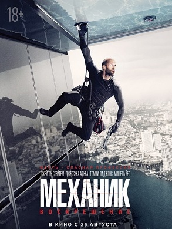
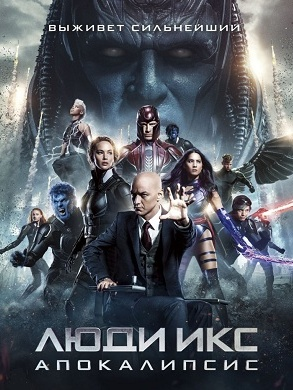
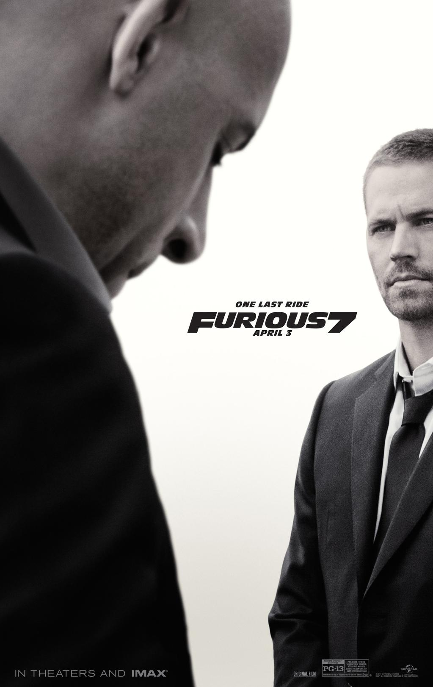
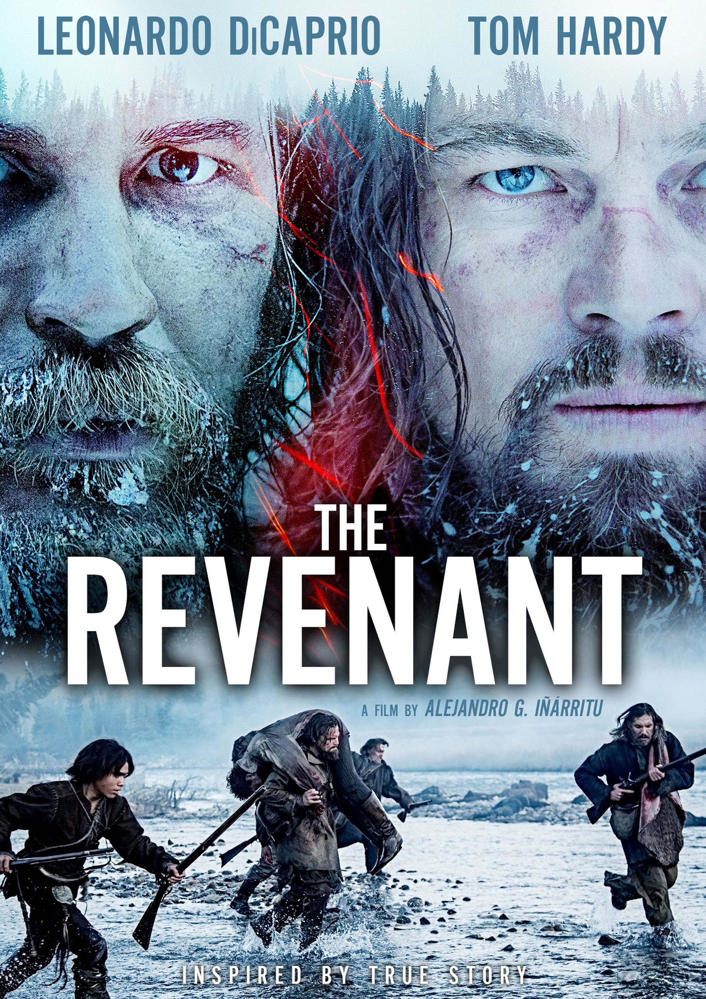
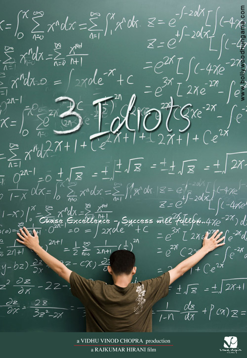

Genre: Crime, Thriller
Release date: January 18, 2016
Short descriptinon: Resurrection is a 2016 French–American action thriller film directed by Dennis Gansel. It is written by Philip Shelby and Tony Mosher from a story by Shelby and Brian Pittman. It is the sequel to the 2011 film The Mechanic, which was a remake of the 1972 film of the same name. The film stars Jason Statham, Tommy Lee Jones, Jessica Alba and Michelle Yeoh.
Genre: Fantasy, Thriller, Crime
Release date: May 14, 2016
Short descriptinon: In X-Men: Apocalypse, the ancient mutant En Sabah Nur awakens in 1983 and plans to wipe out modern civilization and take over the world, leading the X-Men to try to stop him and defeat his team of renegade mutants. The film's plot is inspired by the X-Factor storyline Fall of the Mutants and Ultimate X-Men's Apocalypse arc.
Genre: Crime, Action
Release date: March 2015
Short descriptinon: Furious 7 follows Dominic Toretto (Diesel), Brian O'Conner (Walker) and the rest of their team, who have returned to the United States to live normal lives after securing amnesty for their past crimes in Fast & Furious 6 (2013), until Deckard Shaw (Statham), a rogue special forces assassin seeking to avenge his comatose younger brother, puts them in danger once again.
Genre: Thriller, Journey
Release date: April 2015
Short descriptinon: The Revenant is a 2015 American epic biographical western drama film directed and co-produced by Alejandro G. Iñárritu and co-written by Iñárritu and Mark L. Smith, based in part on Michael Punke's novel of the same name, describing frontiersman Hugh Glass' experiences in 1823. It stars Leonardo DiCaprio, Tom Hardy, Domhnall Gleeson, and Will Poulter.
Genre: Comedy, Melodrama
Release date: June 2009
Short descriptinon: 3 Idiots is a 2009 Indian coming of age comedy-drama film co-written, edited, and directed by Rajkumar Hirani and produced by Vidhu Vinod Chopra. Abhijat Joshi wrote the screenplay. It was loosely adapted from the novel Five Point Someone by Chetan Bhagat. The film stars Aamir Khan, Kareena Kapoor, R. Madhavan, Sharman Joshi, Omi Vaidya, Parikshit Sahni and Boman Irani.
Click link below to go to index page
Home